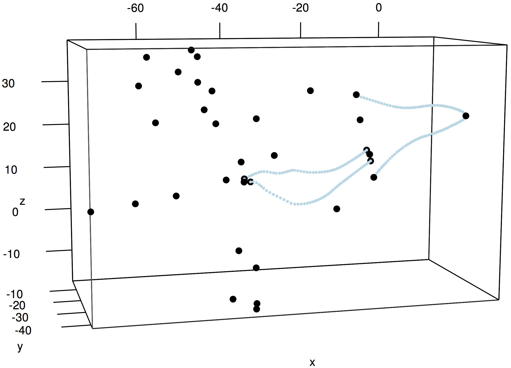

9 Visualizing shape data
This section will demonstrate how to plot landmarks and curves using the R package rgl If you'd like to try using readShapes() with an example dataset you can download this stereo landmark and curve set (10 KB), previously used in 3D reconstruction. Unzip the folder's contents into your current R working directory.
1. Begin by loading the StereoMorph and rgl packages.
# Load the StereoMorph and rgl packages library(StereoMorph) library(rgl)
2. Read in the shapes from a file in the tutorial project 'Shapes 3D' folder.
# Read shapes shapes <- readShapes(file='Shapes 3D/bubo_virginianus_FMNH488595.txt') # Save the landmark matrix into a separate variable lm <- shapes$landmarks
3. Define the ranges of x,y,z values of the plots as a variable. This will be used to set the aspect ratio of the plot box. Otherwise, plot3d() will plot the points in a box with equal lengths on all sides.
# Define range r <- apply(lm, 2, 'max') - apply(lm, 2, 'min') # Use plot3d to plot the landmarks within a bounding box plot3d(lm, aspect=c(r/r[3]), size=7)
4. To plot the curve points, use lapply() to apply plot3d() to each element of the list shapes.
# Plot curve points lapply(shapes$curves, plot3d, size=4, col='lightblue', add=TRUE)
The rgl plot opens in an interactive window that allows you to rotate the coordinates using the mouse.
